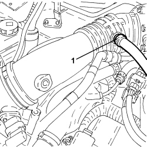
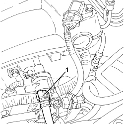

1080E64 PIPE FROM SOLENOID VALVE TO AIR INTAKE CHAMBER - R.R.
- Path
- Procedures > 10 ENGINE > 1080 EMISSION CONTROL SYSTEM > 1080E EVAPORATION CONTROL SYSTEM > 1080E64 PIPE FROM SOLENOID VALVE TO AIR INTAKE CHAMBER - R.R.
- Kind
- repair procedure (removal / refitting; the operation number is the code)
- Applies to
- engines: 3.2 JTS; all production periods
- Interactive page
- https://sloeber94.github.io/elrnDB/alfa/159/en/#/939005285
Applies to: engines: 3.2 JTS; all production periods
 Removing
Removing
 Refitting
Refitting1. Loosen the band for the fuel vapour pipe, throttle body side.

Applies to: engines: 3.2 JTS; all production periods
1. Disconnect the rapid connector for the fuel vapour pipe, solenoid valve side and then remove it.

Applies to: engines: 3.2 JTS; all production periods
Refitting
Removing- Place the fuel vapour pipe in position and connect it to the intake chamber, throttle body side and to the solenoid valve.